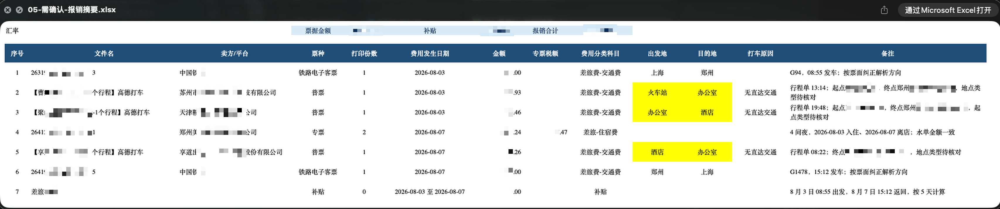
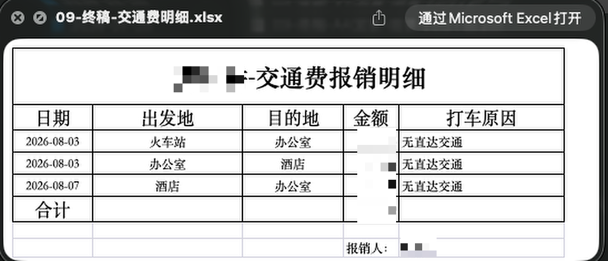
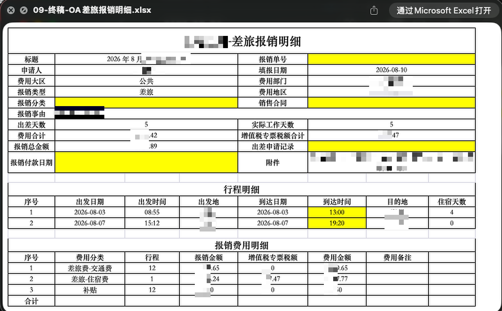
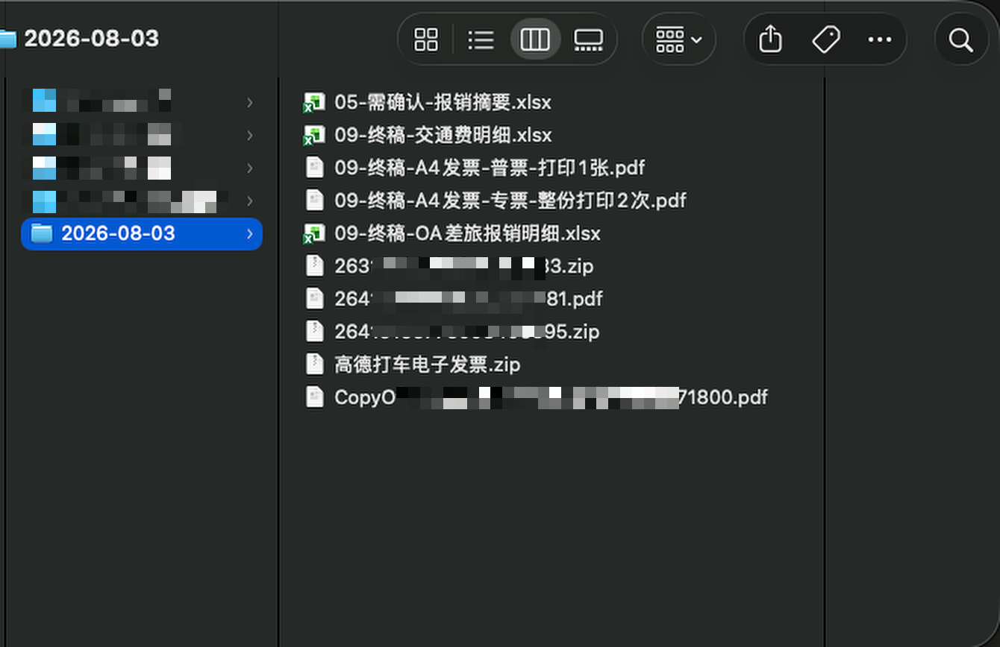
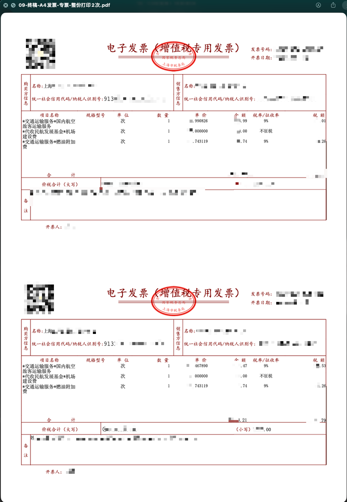

差旅报销
帮我处理差旅报销，材料在这个文件夹：文件夹路径，报销人是实际报销人姓名。
第二步 / 发票自动整理 / Codex
把准备好的文件夹交给 Codex。先核对可编辑的报销摘要，明确确认后，再生成 OA 明细和发票打印文件。
安装
第一次使用前安装 JG Work 插件。已经安装并备齐材料的用户可以直接进入“发起整理”。
这是一次性配置。打开终端，复制并运行下面的命令。
codex plugin marketplace add yideng-xl/jg-work-plugin-codex --ref main继续在终端运行下面的命令。
codex plugin add jg-work-plugin-codex@jg-work完全退出并重新打开 Codex，让插件和报销 Skill 生效。
可运行 codex plugin list --marketplace jg-work 检查安装结果。随后新建 Codex 任务，说“帮我处理差旅报销”或“帮我处理其他报销”。
自动更新依赖上面配置的 jg-work 插件市场。完成一次安装后，每次开始一笔新报销时，Skill 会自动检查更新。没有更新时直接继续；发现更新时会先完成更新，再提示你新建任务重新发起本次报销。
如果自动检查失败，会说明原因并继续使用当前版本。需要手动更新时，再运行下面的命令，重启 Codex，并新建任务使用。
codex plugin marketplace upgrade jg-work01
说清报销类型、材料文件夹和本次实际报销人。
差旅报销
帮我处理差旅报销，材料在这个文件夹：文件夹路径，报销人是实际报销人姓名。
其他报销
帮我处理其他报销，材料在这个文件夹：文件夹路径，报销人是实际报销人姓名。
提供完整信息后即可开始；材料中仍有影响报销结果的缺项时，Codex 会提示你核对。
02
Codex 会读取票据和附件，核对金额、税额、票种、费用分类及日期。
识别发票、行程、住宿、支付凭证等文件。
归集金额、税额、发生日期、费用分类和起止地点。
不确定内容标黄，不可报销内容标红，并说明需要确认的地方。
03
打开 05-需确认-报销摘要.xlsx，直接修改需要调整的内容。

04
Codex 会重新读取你确认后的摘要，再生成本次报销需要的文件。
09-终稿-OA差旅报销明细.xlsx
09-终稿-交通费明细.xlsx
交通费明细仅在存在对应打车明细时生成。
09-终稿-OA报销金额明细.xlsx
其他报销不生成差旅行程和交通费明细。
09-终稿-A4发票-普票-打印1张.pdf
09-终稿-A4发票-专票及高铁票-整份打印2次.pdf
高铁票准备两份：一份粘贴，一份随报销单交财务。没有对应票种时，不生成空 PDF。



